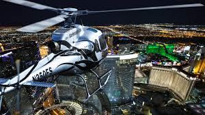

HOOVER DAM
What to Bring:
Hoover Dam is located in the desert and temperatures will usually be hotter than 100 degrees (F) in the summer. It was 90 degrees (F) on our last visit in early April
Bring plenty of drinking water with you, especially if you plan to park in the free parking on the Arizona side. You'll be walking uphill on the way back to your car. The walk across the dam is a half-mile, round trip.
Wear sunscreen and sun hats on the dam. There will be little shade.
We recommend bringing your own snacks and picnic foods. The cafe at Hoover Dam serves lunch, bottled water and cold treats too.


helicoptor tours - FOR LESS THEN $100
Here is what you get: See the bright lights of the Las Vegas Strip and the surrounding region during this nighttime helicopter flight. Soar over this famous stretch of Las Vegas Boulevard with an exclusive sightseeing tour of Sin City’s downtown skyline and beyond, including the Bellagio, the Mirage, and the Fremont Street Experience. Your flight covers approximately 20 miles (32 kilometers) and includes a celebratory glass of sparkling wine. There are a variety of departure times available throughout the evening to fit into almost any schedule. Hotel pickup and drop-off by Mercedes Sprinter is included (if option selected).Nighttime helicopter flight over the Las Vegas Strip Enjoy sparkling wine and refreshments at check-in Admire the Las Vegas Strip from above See the Luxor, the Bellagio, and other famous hotelsOption to include luxury transport to and from the heliport Why Travelers Choose This TourVegas is famous for its neon, and this extended helicopter tour lets you see it all in one sweeping vista!
Read more about Las Vegas Nighttime Helicopter Ride with Optional Transport 2019
TOURS & TRIPS
The Strip may be the heart of Las Vegas, but there’s so much more to Sin City than the casino resorts and bright lights of Las Vegas Boulevard.
With so many awesome places to see off the Strip its hard to pick one or two. Plus it’s just really difficult to rip yourself away from the casinos, bars and sights. The Grand Canyon, a helicopter tour and a visit to The Mob Museum are all super fun things to do.
If you have time (and energy!) to explore beyond the Strip, be sure to checkout everything Nevada has to offer.
- The Neon Museum Distance from the Strip: 7 miles
- The Mob Museum Distance from the Strip: 7 miles
- Grand Canyon Distance from the Strip: 125-280 miles
- Satisfy your need for speed at Exotics Racing Distance from the Strip: 2.5 miles
- The Hoover Dam Distance from the Strip: 36 miles
- Stroll through the Springs Preserve Botanical Gardens Distance from the Strip: 6 miles
- Red Rock Canyon Distance from the Strip: 19 miles
- Bounce around at a trampoline park Distance from the Strip: 6 miles
- The Atomic Testing Museum Distance from the Strip: 2 miles
- Death Valley Distance from the Strip: 125 miles
- First Friday First Friday
- Explore wetlands Distance from the Strip: 12 miles
- Valley of Fire Distance from the Strip: 57 miles
Explore a historic collection of Las Vegas’s neon signage that has been preserved and now displayed in several indoor exhibits, as well as the renowned outdoor “neon boneyard”. The Neon Boneyard is where all old vintage Vegas signs from the original hotels and casinos are laid to rest.
Take a tour to hear about the history of the signs and the celebrities who frequented the hotels and casinos. The Mob Museum is fabulous too – give yourself at least 2 hours for that one.
While you’re in downtown Las Vegas, take a trip back in time and explore the history of organized crime through interactive exhibits and immersive storylines.

Take a break from the city and journey to one of the most breathtaking sights in the United States. The iconic South Rim is about a 5 hour drive from the Strip, while the West Rim is only about 2.5-3 hours away. There are many guided tours that depart right from the Strip, including bus, airplane, and helicopter tours complete with floor landings, champagne toasts, and unparalleled photo ops. Many of our Grand Canyon tours depart from right from the Strip.
Take a look at the most popular Grand Canyon tours and so much more.

Grand Canyon South Rim Bus Tour
Marvel at the South Rim’s breathtaking views on our most popular guided and narrated luxury bus tour to the Grand Canyon’s South Rim National Park! Your journey begins with pick up from the hotel before traveling through Las Vegas & Boulder City, Nevada.

Grand Canyon West Rim Deluxe Bus Tour with Hoover Dam Stop and Optional Skywalk
Enjoy your trip to the Grand Canyon on a large luxury motorcoach, complete with a drive over the Hoover Dam Bypass Bridge before arriving at the stunning West Rim! Skywalk available for an additional fee.

Grand Canyon Helicopter Floor Landing with Limousine Upgrade
Travel to and from your helicopter in a luxury limousine before you land on the Canyon floor and at an exclusive private ramada overlooking the Colorado River. Your return flight includes a cruise over the Las Vegas strip.
Speed demons, rejoice! At Exotics Racing, you can choose from a range of luxury and exotic vehicles and drive your dream car around their 1.2 mile racing track, complete with 1,800 foot straightaway where you can reach speeds up to 130 mph.

One of the world’s most spectacular engineering marvels is just a short drive from the Las Vegas Strip. Descend into the dam, view it from indoor and outdoor platforms, and even from two states! You can also combine your Hoover Dam tour with a Lake Mead or Colorado River Cruise.
Explore our most popular Hoover Dam tours

Complete Hoover Dam Experience
Get the best of both worlds with this tour, a refreshing stop at the Colorado River and an in-depth tour of the mighty Hoover Dam.

Mini Hoover Dam Tour
Catch breathtaking views of Lake Mead in route to the Hoover Dam! Descend 500 feet into the Dam and see it from two states!
Hoover Dam SUV Tour
View the Hoover Dam from two states, and even venture deep inside the Dam to view the generators!
The Springs Preserve Botanical Gardens contains the largest collection of Mojave desert cacti and succulents in the area, as well as a butterfly habitat. It’s a must-visit attraction for nature lovers and families.

Experience the true beauty of the Southwest desert just a few short minutes outside of Las Vegas. The Strip is actually visible from Red Rock Canyon!
I’d love to see Red Rock Canyon. I haven’t made that tour yet but I love nature and landscapes.
If you need a change of scenery or simply want to step back into nature, this much-loved desert oasis is perfect for half-day or full-day excursions.

Red Rock Canyon SUV Tour
See the dramatic scenery of Red Rock Canyon on this unique tour, including scenic drives and an exclusive off-road adventure.
SkyZone Las Vegas was the world’s first indoor trampoline park. With open jumping, Ultimate Dodgeball (AKA dodgeball on a trampoline), SkySlam (that’s trampoline basketball), and a foam zone, SkyZone has something for visitors of any age.
The Atomic Testing Museum is a must-visit for history buffs. The museum tells the story of America’s nuclear testing program, complete with a replica of the control point where nuclear detonation countdowns occurred.

Death Valley is home to the lowest, hottest, and driest spot in North America. It’s continually shifting landscape, diverse wildlife and vegetation, and unique geological features make it one of the most intriguing landscapes in the Southwest.
See Death Valley on our guided day tour

Death Valley Bus Tour
Join us on this wonderful tour Ubehebe Crater, Furnace Creek Ranch Museum, Badwater Mud Canyon and Rhyolite Ghost Town. As a special memento of your adventure, you will receive a Death Valley Explorer Certificate at the end of your tour!
On the first Friday of every month, Las Vegas artists, artisans, and musicians gather downtown to share their work through live music, visual and performing arts, and delicious food. Culture buffs can’t miss this monthly peek into Las Vegas’s burgeoning art scene.
Learn about native wildlife and local ecology at the Clark County Wetlands Park, where you can explore the habitats of the more than 300 species of plants and animals that inhabit the Las Vegas Wash. Guided discovery walks and family programs are available.

Named for its distinctive red sandstone formations, the Valley of Fire State Park consists of over 42,000 acres of rugged desert terrain, complete with iconic rock formations, petroglyphs, canyons and hoodoos.


Good to be a Girl!
Yes, it is possible to get free drinks in Vegas. But you’ll need to be a female. Sorry guys. When you sign up for the free guest lists at Tao, Marquee, Intrigue and Light, you will be given either drink tickets or open bar. Open bar will usually only be for the first hour the club is open. So if you want those free drinks in Vegas, make sure to arrive early and on time.
Free to See
First time to Vegas?
There's so much to see in Vegas and much of it is Free. Knowing where to be and when can earn you some special access to some awesome sights. From Concerts to street artists, VDF has all the best Free stuff to see and do.
Helicopter Strip Tour
Take a Helicopter Tour of the Strip at Night. One of our favorite things to do in Vegas in take a quick 15-20 min Tour of the strip and Fremont St in a Helicopter. Even better at night. Only $89 here.